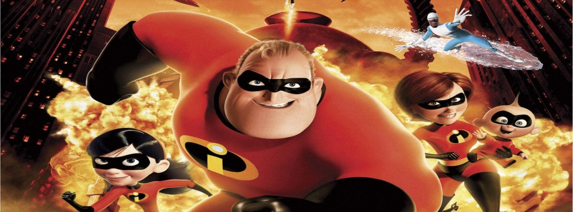

超人特攻隊(The Incredibles)
2004年11月5日

【片長時間】 約１１５分鐘
【作品類別】 迪士尼/皮克斯動畫，長篇劇情動畫片
【原著取材】 原創故事
【內容介紹】本片是知名動畫導演 Brad Bird 加入皮克斯執導的首部作品，故事是關於一個天賦異秉的超人家庭，本名為 Bob Parr 的 Incredible 先生過去參與過不少打擊犯罪的英雄事蹟，後來因為社會大眾心態的轉變，他跟愛妻 Helen 結婚後就退隱江湖，十多年來他們育有三個子女－ Violet 、Dash 和剛出生的 Jack-Jack ，他們一家五口住在大城市的郊區，過著跟一般正常人同樣的平靜生活。
但是， 這樣平靜的生活後來卻被打斷了，不但原本掩飾身分的工作不保，甚至被捲進事先策劃的陰謀。野心勃勃的大壞蛋 Syndrome 來頭不明，開始秘密展開打擊超人特攻隊的行動，於是，重操舊業的 Incredible 先生，再度擔負起拯救世界的重責大任，但事隔多年以後，他是否依然寶刀未老？尤其，如今他是超人家庭的一家之主，家家有本難唸的經，拯救世界的同時，如何讓一家人依然團結在一起呢？種種考驗正等待著超人家庭的一家大小！